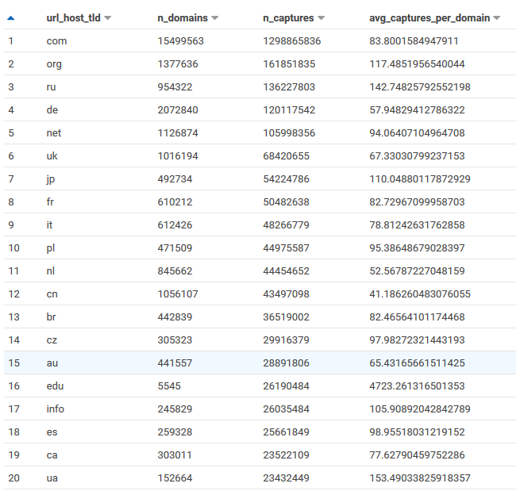
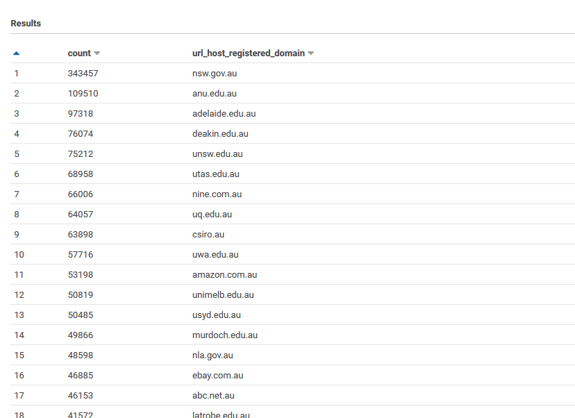
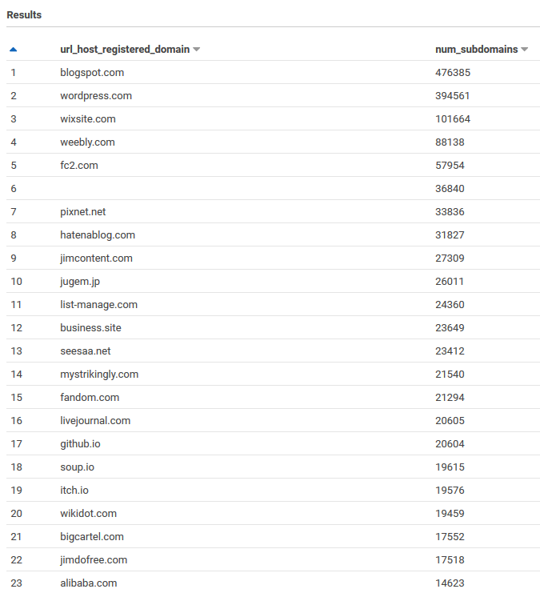
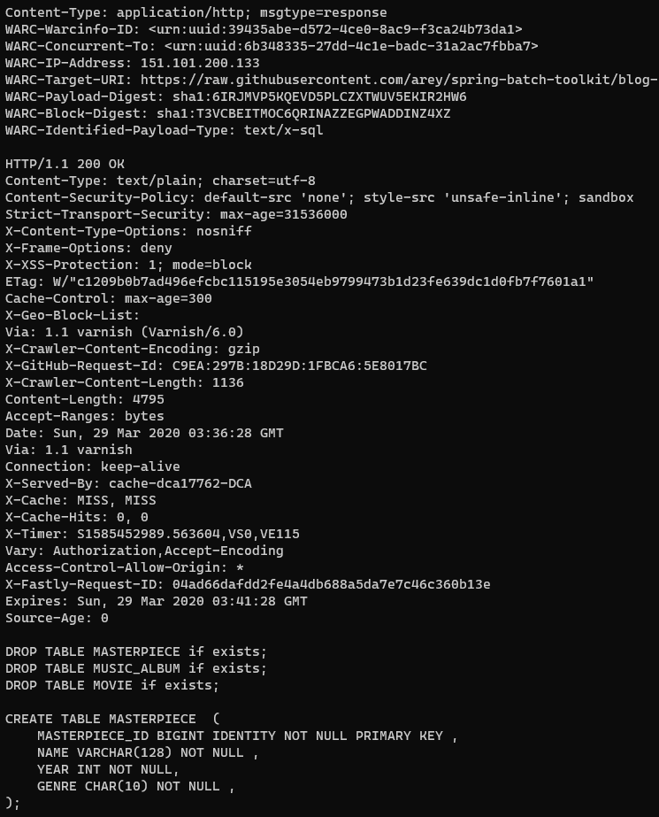

Common Crawl Index Athena
Common Crawl builds an open dataset containing over 100 billion unique items downloaded from the internet. There are petabytes of data archived so directly searching through them is very expensive and slow. To search for pages that have been archived within a domain (for example all pages from wikipedia.com) you can search the Capture Index. But this doesn’t help if you want to search for paths archived across domains.
For example you might want to find how many domains been archived, or the distribution of languages of archived pages, or find pages offered in multiple languages to build a corpus of parallel texts for a machine translation model. For these usecases Common Crawl provide a columnar index to the WARC files, which are parquet files available on S3. Even the index parquet files are 300 GB per crawl so you may want to process them with Spark or AWS Athena (which is a managed version of Apache Presto).
Common Crawl have a guide to setting up access to the index in Athena, and a repository containing examples of Athena queries and Spark jobs to extract information from the index. This article will explore some examples of querying this data with Athena, assuming you have created the table ccindex as per the Common Crawl setup instructions. You can run them through the AWS web console, through an Athena CLI or in Python with pyathena or R with RAthena
Keeping Athena costs low
Every time you run a query in AWS Athena they charge for processing the query (currently $5 per terabyte), for S3 requests and transfer to the underlying data (which we don’t pay for here because the S3 bucket results) and the S3 storage costs of any created results. See the AWS pricing details for more complete and current information, but the strategies will be the same.
Whenever you run a query in Athena the output is stored as an uncompressed CSV in S3 in the staging bucket you configured, so you should periodically delete old results, for example manually or with lifecycle rules. If you ever need to create a large extract (multiple gigabytes) it’s more cost efficient to store it as parquet with a Create Table As Statement (CTAS); see my article on exporting data from Athena for details.
To keep the amount of data processed low the best things to do is filter on crawl which correspond to which monthly snapshot is used, and subset, because the table is partitioned on these it will always reduce the amount of data scanned. Only querying the columns you need (instead of select *) will also reduce the amount of data scanned, since the data is stored in a columnar format. Finally if you can use a low cardinality column prefer that over a high cardinality column (e.g. don’t use url if you only want the TLD, use url_host_tld instead).
Exploring Common Crawl with Athena
We can find out what crawls are in the data by searching through the partitions. Because we’re just using the partition columns we’re not charged for any data processed, but it’s relatively slow; it took 3 minutes for me.
SELECT crawl, subset, count(*) as n_captures
FROM "ccindex"."ccindex"
GROUP BY crawl, subset
ORDER BY crawl desc, subset| crawl | subset | n_captures |
|---|---|---|
| CC-MAIN-2020-24 | crawldiagnostics | 70454588 |
| CC-MAIN-2020-24 | robotstxt | 15356021 |
| CC-MAIN-2020-24 | warc | 277844242 |
| CC-MAIN-2020-16 | crawldiagnostics | 432035051 |
| CC-MAIN-2020-16 | robotstxt | 112871871 |
| CC-MAIN-2020-16 | warc | 2886236237 |
| … | … | … |
The crawls contain the year and ISO week of the crawl (so e.g. CC-MAIN-2020-24 is the crawl from the 24th week of 2020, which is early June).
There are 3 kinds of subsets, as described in the 2016 release
- warc - The actual web archive files containing all the data of successful requests (200 ok)
- crawldiagnostics - Contains responses like 404 file not found, redirects, 304 not modified, etc.
- robotstxt - Contains the robots.txt that would impact what pages the crawl accessed
At the time of writing it looks like there’s something wrong with the most recent index, it contains 280 million captures, when the dataset should countail 2.75 billion. However the 2020-16 one looks correct.
Note that when new crawls are added you have to first run MSCK Repair Table to be able to access them (this re-scans the partitions).
What’s in the columnar index
To see what’s in the index let’s look at a few example rows; we’ll limit 10 to reduce the amount of data scanned (under 10MB).
The columns are
- url_surtkey: Canonical form of URL with host name reversed
- url: URL that was archived
- url_host_name: The host name
- url_host_tld: The TLD (e.g. au)
- url_host_2nd_last_part, … url_host_5th_last_part: The parts of the host name separated by .
- url_host_registry_suffix: e.g. .com.au
- url_host_private_domain
- url_protocol: e.g. https
- url_port: The port accesed, it seems to be blank for default ports (80 for http, 443 for https).
- url_path: The path of the URL (everything from the first
/to the query parameter starting at?) - url_query: Query parameter; everything after the
? - fetch_time: When the page was retrieved
- fetch_status: The HTTP status of the request (e.g. 200 is OK)
- content_digest: A digest to uniquely identify the content
- content_mime_type: The type of content in the header
- content_mime_detected: The type of content detected
- content_charset: The characterset of the data (e.g. UTF-8)
- content_languages: Languages declared of the content
- warc_filename: The filename the archived data is in
- warc_record_offset: The offset in bytes in the archived file where the corresponding data starts
- warc_record_length: The length of the archived data in bytes
- warc_segment: The segment the data is archived in; this is part of the filename
- crawl: The id of the crawl (e.g. CC-MAIN-YYYY-WW where YYYY is the year and WW is the ISO week of the year).
- subset: Is this the ‘warc’, or ‘robotstxt’, or ‘crawldiagnostics’
SELECT *
FROM "ccindex"."ccindex"
WHERE crawl = 'CC-MAIN-2020-24'
AND subset = 'warc'
AND url_host_tld = 'au'
AND url_host_registered_domain = 'realestate.com.au'
limit 10| url_surtkey | url | url_host_name | url_host_tld | url_host_2nd_last_part | url_host_3rd_last_part | url_host_4th_last_part | url_host_5th_last_part | url_host_registry_suffix | url_host_registered_domain | url_host_private_suffix | url_host_private_domain | url_protocol | url_port | url_path | url_query | fetch_time | fetch_status | content_digest | content_mime_type | content_mime_detected | content_charset | content_languages | warc_filename | warc_record_offset | warc_record_length | warc_segment | crawl | subset |
|---|---|---|---|---|---|---|---|---|---|---|---|---|---|---|---|---|---|---|---|---|---|---|---|---|---|---|---|---|
| au,com,realestate)/advice | https://www.realestate.com.au/advice/ | www.realestate.com.au | au | com | realestate | www | com.au | realestate.com.au | com.au | realestate.com.au | https | /advice/ | 2020-05-28 22:09:01.000 | 200 | BIVR34XTK7HJGQJ5H47GO65UBODZA6XY | text/html | text/html | UTF-8 | eng | crawl-data/CC-MAIN-2020-24/segments/1590347400101.39/warc/CC-MAIN-20200528201823-20200528231823-00270.warc.gz | 898091083 | 17598 | 1590347400101.39 | CC-MAIN-2020-24 | warc | |||
| au,com,realestate)/advice/10-clever-storage-solutions-rental-properties | https://www.realestate.com.au/advice/10-clever-storage-solutions-rental-properties/ | www.realestate.com.au | au | com | realestate | www | com.au | realestate.com.au | com.au | realestate.com.au | https | /advice/10-clever-storage-solutions-rental-properties/ | 2020-06-06 05:39:55.000 | 200 | 2YJSRGZHQVSE5WWKHEHPJ26RBIIQOIMP | text/html | text/html | UTF-8 | eng | crawl-data/CC-MAIN-2020-24/segments/1590348509972.80/warc/CC-MAIN-20200606031557-20200606061557-00502.warc.gz | 855590228 | 36195 | 1590348509972.80 | CC-MAIN-2020-24 | warc | |||
| au,com,realestate)/advice/10-features-to-look-for-when-buying-a-period-home | https://www.realestate.com.au/advice/10-features-to-look-for-when-buying-a-period-home/ | www.realestate.com.au | au | com | realestate | www | com.au | realestate.com.au | com.au | realestate.com.au | https | /advice/10-features-to-look-for-when-buying-a-period-home/ | 2020-05-26 08:40:48.000 | 200 | V75WAUJFWLXT5VPZFCPHUEPFHAZJY6MX | text/html | text/html | UTF-8 | eng | crawl-data/CC-MAIN-2020-24/segments/1590347390755.1/warc/CC-MAIN-20200526081547-20200526111547-00430.warc.gz | 809064278 | 35882 | 1590347390755.1 | CC-MAIN-2020-24 | warc | |||
| au,com,realestate)/advice/10-foodie-towns-worth-going-rural | https://www.realestate.com.au/advice/10-foodie-towns-worth-going-rural/ | www.realestate.com.au | au | com | realestate | www | com.au | realestate.com.au | com.au | realestate.com.au | https | /advice/10-foodie-towns-worth-going-rural/ | 2020-05-27 16:31:24.000 | 200 | XP4RGQCIWL5GL4O3KJG53AGRYVRXEGGV | text/html | text/html | UTF-8 | eng | crawl-data/CC-MAIN-2020-24/segments/1590347394756.31/warc/CC-MAIN-20200527141855-20200527171855-00398.warc.gz | 909969420 | 35652 | 1590347394756.31 | CC-MAIN-2020-24 | warc | |||
| au,com,realestate)/advice/10-things-consider-buying-fixer-upper | https://www.realestate.com.au/advice/10-things-consider-buying-fixer-upper/ | www.realestate.com.au | au | com | realestate | www | com.au | realestate.com.au | com.au | realestate.com.au | https | /advice/10-things-consider-buying-fixer-upper/ | 2020-05-27 13:38:45.000 | 200 | EZSDPRBNJIJEY4Y47C6A42T7YCDNDOSH | text/html | text/html | UTF-8 | eng | crawl-data/CC-MAIN-2020-24/segments/1590347394074.44/warc/CC-MAIN-20200527110649-20200527140649-00029.warc.gz | 891295141 | 34746 | 1590347394074.44 | CC-MAIN-2020-24 | warc | |||
| au,com,realestate)/advice/10-things-moving-new-house | https://www.realestate.com.au/advice/10-things-moving-new-house/ | www.realestate.com.au | au | com | realestate | www | com.au | realestate.com.au | com.au | realestate.com.au | https | /advice/10-things-moving-new-house/ | 2020-06-02 18:28:54.000 | 200 | EX24KJUKOHX5GOX36QFTNVZGACZPJO2J | text/html | text/html | UTF-8 | eng | crawl-data/CC-MAIN-2020-24/segments/1590347425481.58/warc/CC-MAIN-20200602162157-20200602192157-00363.warc.gz | 879272045 | 35475 | 1590347425481.58 | CC-MAIN-2020-24 | warc | |||
| au,com,realestate)/advice/10-tips-coping-share-house-kitchen | https://www.realestate.com.au/advice/10-tips-coping-share-house-kitchen/ | www.realestate.com.au | au | com | realestate | www | com.au | realestate.com.au | com.au | realestate.com.au | https | /advice/10-tips-coping-share-house-kitchen/ | 2020-06-02 09:15:24.000 | 200 | GWGMC36W4MHHSZ4GOQJA5AHGPY3LUUID | text/html | text/html | UTF-8 | eng | crawl-data/CC-MAIN-2020-24/segments/1590347423915.42/warc/CC-MAIN-20200602064854-20200602094854-00528.warc.gz | 840946829 | 33050 | 1590347423915.42 | CC-MAIN-2020-24 | warc | |||
| au,com,realestate)/advice/10-tips-to-sharing-a-home-with-your-adult-children | https://www.realestate.com.au/advice/10-tips-to-sharing-a-home-with-your-adult-children/ | www.realestate.com.au | au | com | realestate | www | com.au | realestate.com.au | com.au | realestate.com.au | https | /advice/10-tips-to-sharing-a-home-with-your-adult-children/ | 2020-05-28 02:26:38.000 | 200 | FMVSRNL32GKBRPLTV755XBL43G27P7YX | text/html | text/html | UTF-8 | eng | crawl-data/CC-MAIN-2020-24/segments/1590347396300.22/warc/CC-MAIN-20200527235451-20200528025451-00478.warc.gz | 873617107 | 31724 | 1590347396300.22 | CC-MAIN-2020-24 | warc | |||
| au,com,realestate)/advice/101-guide-contents-insurance | https://www.realestate.com.au/advice/101-guide-contents-insurance/ | www.realestate.com.au | au | com | realestate | www | com.au | realestate.com.au | com.au | realestate.com.au | https | /advice/101-guide-contents-insurance/ | 2020-06-05 11:00:50.000 | 200 | PTLEDOTFYPBVZO2AC26KUHB6SBJ6FZKG | text/html | text/html | UTF-8 | eng | crawl-data/CC-MAIN-2020-24/segments/1590348496026.74/warc/CC-MAIN-20200605080742-20200605110742-00542.warc.gz | 837847660 | 31792 | 1590348496026.74 | CC-MAIN-2020-24 | warc | |||
| au,com,realestate)/advice/11-things-you-really-need-to-tell-your-landlord | https://www.realestate.com.au/advice/11-things-you-really-need-to-tell-your-landlord/ | www.realestate.com.au | au | com | realestate | www | com.au | realestate.com.au | com.au | realestate.com.au | https | /advice/11-things-you-really-need-to-tell-your-landlord/ | 2020-05-31 04:37:28.000 | 200 | MWL7BHWJEGV7TU7ORULZYGBRDNIY3GQI | text/html | text/html | UTF-8 | eng | crawl-data/CC-MAIN-2020-24/segments/1590347410745.37/warc/CC-MAIN-20200531023023-20200531053023-00083.warc.gz | 867625659 | 33829 | 1590347410745.37 | CC-MAIN-2020-24 | warc |
Most crawled TLDs
To get an idea of the coverage of Common Crawl we can look at the most crawled TLDs, the number of captured domains and the average number of captures per domain for a snapshot.
# Scans 150GB (~ 75c)
SELECT url_host_tld,
approx_distinct(url_host_registered_domain) as n_domains,
count(*) as n_captures,
sum(1e0) / approx_distinct(url_host_registered_domain) as avg_captures_per_domain,
FROM "ccindex"."ccindex"
WHERE crawl = 'CC-MAIN-2020-16'
AND subset = 'warc'
group by url_host_tld
order by n_captures descThe number of domains is staggering; 15 million from .com alone, 400k for Australia. The typical average number of pages per domain is 80, but for .edu it’s nearly 5,000 and for .gov it’s nearly 2,500. Much more content is archived from a university of government pages than general domains.

Australian domains with most pages archived
This query finds the au domains with most pages archived from 2020-16 crawl. It takes about 5s and scans under 10MB (so it’s practically free).
SELECT COUNT(*) AS count,
url_host_registered_domain
FROM "ccindex"."ccindex"
WHERE crawl = 'CC-MAIN-2020-16'
AND subset = 'warc'
AND url_host_tld = 'au'
GROUP BY url_host_registered_domain
HAVING (COUNT(*) >= 100)
ORDER BY count DESC
limit 500The top websites look to be government and university websites. Note this isn’t about popularity of the site, but is related to the number of pages on the site, how many links there are to each page, and the how permissive its robots.txt file is. To find the most popular sites you would need panel web traffic panel like Alexa.

Domains with the most subdomains
Some domains have a lot of different subdomains which they provide to users as namespaces. Wordpress is a common example where you can get a free personal website with a Wordpress domain. These could be good places to look for user generated content, each subdomain belonging to a user.
SELECT url_host_registered_domain,
approx_distinct(url_host_name) AS num_subdomains
FROM "ccindex"."ccindex"
WHERE crawl = 'CC-MAIN-2020-16'
AND subset = 'warc'
GROUP BY url_host_registered_domain
ORDER BY num_subdomains DESC
LIMIT 100
# Scans 1GB dataThe results make sense, the top 5 sites; blogspot, wordpress, wixsite, weebly and fc2 are all sites for hosting personal content.

Public Dropbox Content Types
There were almost five thousand subdomains of dropboxusercontent.com, it would be interesting to see what type of content is in there.
SELECT content_mime_detected,
count(*) as n
FROM "ccindex"."ccindex"
WHERE crawl = 'CC-MAIN-2020-16'
AND subset = 'warc'
AND url_host_registered_domain = 'dropboxusercontent.com'
GROUP BY 1
ORDER BY n DESC
LIMIT 100It’s mostly PDFs, but there’s some zip files and mobile applications. I wonder how much of it is malware.
| content_mime_detected | n |
|---|---|
| application/pdf | 5033 |
| application/zip | 204 |
| audio/mpeg | 186 |
| application/vnd.symbian.install | 130 |
| text/plain | 127 |
| image/jpeg | 63 |
| application/vnd.android.package-archive | 55 |
| video/mp4 | 38 |
| application/epub+zip | 36 |
Downloading some content
Let’s find some SQL files on Github:
SELECT url,
warc_filename,
warc_record_offset,
warc_record_offset + warc_record_length as warc_record_end
FROM "ccindex"."ccindex"
WHERE crawl = 'CC-MAIN-2020-16'
AND subset = 'warc'
AND url_host_registered_domain = 'githubusercontent.com'
AND content_mime_detected = 'text/x-sql'
LIMIT 5| url | warc_filename | warc_record_offset | warc_record_length |
|---|---|---|---|
| https://raw.githubusercontent.com/arey/spring-batch-toolkit/blog-parallelisation/src/test/resources/com/javaetmoi/core/batch/test/TestParallelAndPartitioning.sql | crawl-data/CC-MAIN-2020-16/segments/1585370493684.2/warc/CC-MAIN-20200329015008-20200329045008-00304.warc.gz | 689964496 | 689966615 |
| https://raw.githubusercontent.com/bailangzhan/demo/master/category.sql | crawl-data/CC-MAIN-2020-16/segments/1585371896913.98/warc/CC-MAIN-20200410110538-20200410141038-00434.warc.gz | 616371570 | 616562918 |
| https://raw.githubusercontent.com/citrix/sample-scripts/master/storefront/Create-ImportSubscriptionDataSP.sql | crawl-data/CC-MAIN-2020-16/segments/1585371896913.98/warc/CC-MAIN-20200410110538-20200410141038-00251.warc.gz | 619544564 | 619546850 |
| https://raw.githubusercontent.com/citrix/sample-scripts/master/storefront/Create-StoreSubscriptionsDB-2016.sql | crawl-data/CC-MAIN-2020-16/segments/1585370506673.7/warc/CC-MAIN-20200402045741-20200402075741-00091.warc.gz | 669277710 | 669280288 |
| https://raw.githubusercontent.com/cwoodruff/ChinookDatabase/master/Scripts/Chinook_SqlServer.sql | crawl-data/CC-MAIN-2020-16/segments/1585370506673.7/warc/CC-MAIN-20200402045741-20200402075741-00421.warc.gz | 652805559 | 652898120 |
We can then use this to retrieve the WARC for the first record; we just prepend https://data.commoncrawl.org/ to the filename and only get the relevant bytes with the Range header.
curl https://data.commoncrawl.org/crawl-data/CC-MAIN-2020-16/segments/1585370493684.2/warc/CC-MAIN-20200329015008-20200329045008-00304.warc.gz \
-H "range: bytes=689964496-689966615" > sql_sample.warc.gzThen you can inspect the file with zcat

If you needed to export the WARC data at scale Common Crawl have a script for producing the WARC extract from a SparkSQL query.